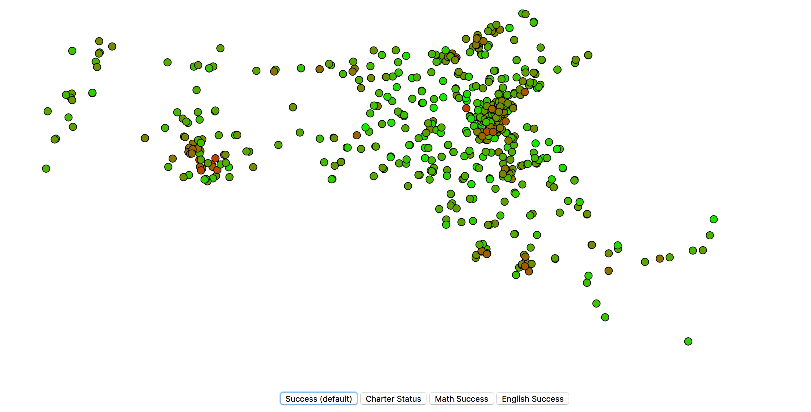
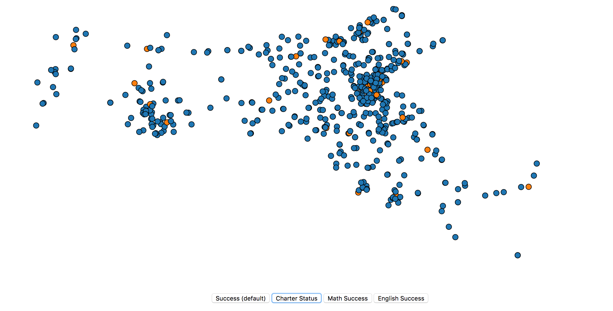
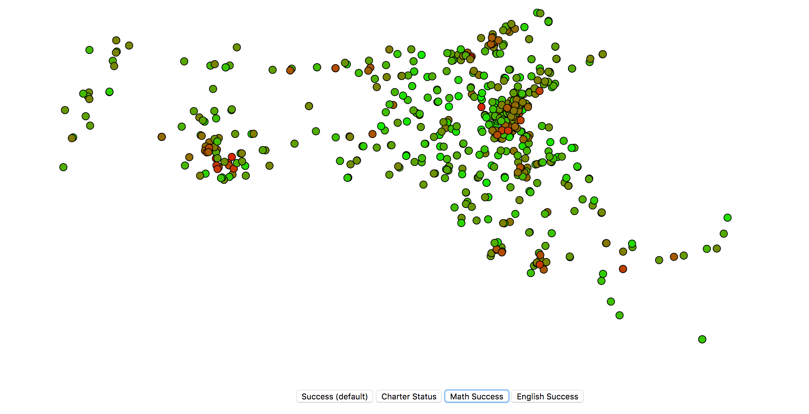
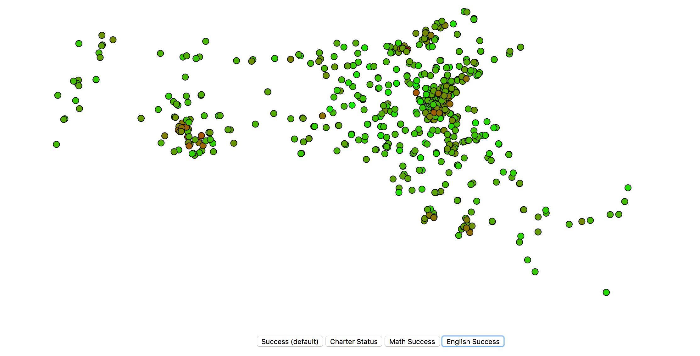
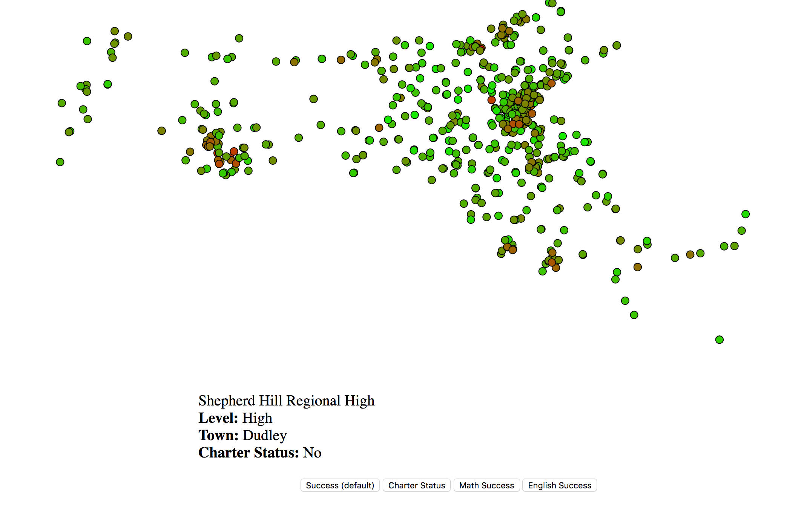

Explanation of Visualization (above)
Run python3 -m http.server 8888 & from the schooldsproject directory to see the visualization. Each point represents a school in Massachusetts.
The buttons toggle the color coding of the map. For the 3 success metrics, the colors go from red (a score of 0) to green (a score of 10). The document "success metric calculation" explains how these scores are calculated. The charter/non charter button changes the color of the dots to blue (public) and orange (charter).
Zoom is now available on the map. Simply scroll (two finger slide) on the map to zoom in on an area. Drag to pan. It doesn't re-render so the dots are still on top of each other, but in the next iteration we plan on fixing this.
The last new feature is the label with school title, level (primary/middle/high) and charter status. Mouse over a school to display its information in the label. We plan on incorporating enrollment as well. Alternate images are at the bottom of the page.
Alternate Images of Visualization
    Machine Learning
We switched to a linear regression model. This allows us to better predict the continuous success scores of the school. The mean of the 10-fold cross validation should be approximately the same as the overall classifier score if we are not over-fitting the classifier to our training set. The standard deviation tells us how close our average guess might be.
The classifier score tells us how good our classifier is. The perfect classifier score is 1.0, where our linear regression model guesses correctly every time. A score of 0 means the predictor is just blindly guessing the same thing each time. A negative score means that the predictor performs worse than if it were to guess something random each time.
We wanted to test if any of our characteristics could be used on their own to predict school success. What we found was that some, such as race and gender information, as well as selected population (low-income student info) were much more successful than others. For example, the number of incidents per student at a school told us almost nothing -- our algorithm mostly just blindly guessed the success metric each time.
Out of the first five characteristics we tested , it seems that the following are the best predictors for school test scores:
- Selected Population (0.35)
- Race and Gender Breakdown (0.32)
- School Size (0.13)
- School Teacher Data (0.1)
- Number of incidents per student (0.06)
Even with our highest predictors, the classifier score hovered around ~0.34. This is markedly better than blind prediction, which would have scored a 0, but was not the accuracy we were looking for. To get our accuracy up, we sought to combine all of these metrics to give us a more accurate predictor.
This is a rudimentary start, but just by combining ten features we increased our accuracy to 0.58! This was a vast improvement -- we hope we can take it further by the final project by adding and tuning even more features.
CUMULATIVE CLASSIFIER:
mean and std dev for cross validation scores: 0.567597169461 0.0764403272182
classifier score: 0.57999711756